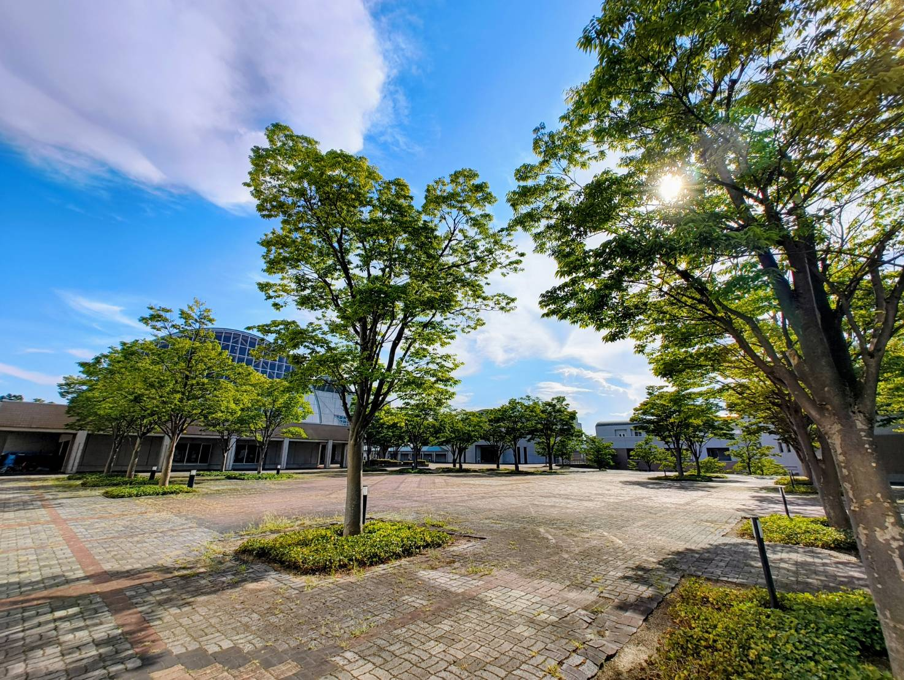

志望理由
主体的に学び、未来を切り拓く力を育みたい
私は現在大学院に在籍しており、指導補助等で後輩学生に接する機会が多くあります。大学は、学生自身が主体的に目的や行動指針を設定し、それに向かって挑戦していくことが求められる場所ですが、多くの学生がこの「自分で目的・行動指針を設定し遂行する力」を十分に持ち合わせていない現状を目の当たりにしています。
自分自身を振り返ると、私も大学入学当初は、高校までとは異なる大学の自由さに戸惑い、当初は主体的に目的や行動指針を設定できませんでした。しかし、この経験を通じて、自分自身で目的や行動指針を設定し、それに向かって行動することの重要性を痛感しました。
この「自分で目的・行動指針を設定し遂行する力」は、個性が重視される現代社会において、これからの時代を生き抜く上で不可欠な鍵だと強く感じています。学生がこの力を育むためには、小中学校や高校といった早い段階から、既存の評価基準に従うだけでなく、自分自身で目的や行動指針を明確にし、それに基づいて行動する経験を積むことが重要だと考えております。
将来を担う生徒たちが、既存のレールに従うだけでなく、自ら道を切り拓く力を身につけ、主体的に人生を築くことができる人材へと成長できるよう、教育現場でこのような経験の提供や働きかけに関わり、その育成に貢献したいという強い思いから、教員を志望いたしました。
母校・城西川越で貢献したいこと
私が城西川越の教員を志望するのは、先生方が「生徒ファースト」で、自然体で生徒と向き合う姿に強く惹かれているからです。在学中、裏表のない先生方の姿勢に安心感を覚え、心から信頼できる環境で最高の6年間を過ごすことができました。さらに、先日の教育実習では、先生方が互いに協力し合う温かい雰囲気に何度も助けられ、働く環境としての素晴らしさも実感しました。
今度は私が教員として、この素晴らしい環境を未来の後輩たちに繋いでいきたいです。優しく素直な生徒たちの成長を支えることで、母校に恩返しをしたいと考えています。